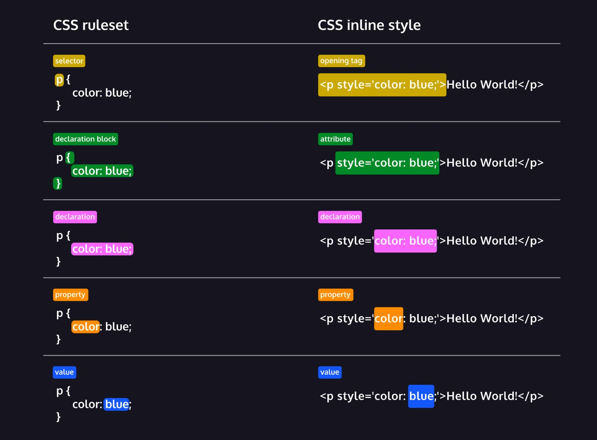
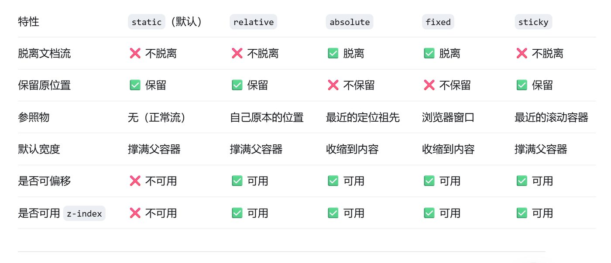

Codecademy Record 02
Learn CSS
Notes

Understanding that a declaration is used to style a selected element is key to learning how to style HTML documents with CSS! The terms below explain each of the labels in the diagram on the right.
Ruleset Terms:
- Selector—The beginning of the ruleset used to target the element that will be styled.
- Declaration Block—The code in-between (and including) the curly braces ({ }) that contains the CSS declaration(s).
- Declaration—The group name for a property and value pair that applies a style to the selected element.
- Property—The first part of the declaration that signifies what visual characteristic of the element is to be modified.
- Value—The second part of the declaration that signifies the value of the property.
Inline Style Terms:
- Opening Tag—The start of an HTML element. This is the element that will be styled.
- Attribute—The style attribute is used to add CSS inline styles to an HTML element.
- Declaration—The group name for a property and value pair that applies a style to the selected element.
- Property—The first part of the declaration that signifies what visual characteristic of the element is to be modified.
- Value—The second part of the declaration that signifies the value of the property.
Don’t worry about memorizing all of these—you will get acquainted with them more and more as the course progresses! Feel free to come back and use this exercise as a reference later on.
Chapter 1: SetUp and Syntax
Great work so far! By understanding how to incorporate CSS code into your HTML file, as well as learning some of the key terms, you’re on your way to creating spectacular websites with HTML and CSS.
Let’s review what you learned so far:
- The basic anatomy of CSS syntax written for both inline styles and stylesheets.
- Some commonly used CSS terms, such as ruleset, selector, and declaration.
- CSS inline styles can be written inside the opening HTML tag using the style attribute.
- Inline styles can be used to style HTML, but it is not the best practice.
- An internal stylesheet is written using the <style> element inside the <head> element of an HTML file.
- Internal stylesheets can be used to style HTML but are also not best practice.
- An external stylesheet separates CSS code from HTML, by using the .css file extension.
- External stylesheets are the best approach when it comes to using HTML and CSS.
- External stylesheets are linked to HTML using the <link> element.
Take this knowledge to the next lesson, where you start learning how to select HTML elements to style!
Here are a few more resources to add to your toolkit:
- Codecademy Docs: CSS
- Preview: Docs CSS, short for Cascading Style Sheets, is a style sheet language used to style websites. Colors, fonts, and page layouts for a site can all be managed using CSS. The more comfortable you are with CSS, the better equipped you will be to create an appealing website.
- Codecademy Workspaces: CSS
Make sure to bookmark these links so you have them at your disposal.
Chapter 2: Selector
Throughout this lesson, you learned how to select HTML elements with CSS and apply styles to them. Let’s review what you learned:
- CSS can select HTML elements by type, class, ID, and attribute.
- All elements can be selected using the universal selector.
- An element can have different states using the pseudo-class selector.
- Multiple CSS classes can be applied to one HTML element.
- Classes can be reusable, while IDs can only be used once.
- IDs are more specific than classes, and classes are more specific than type. That means IDs will override any styles from a class, and classes will override any styles from a type selector.
- Multiple selectors can be chained together to select an element. This raises the specificity but can be necessary.
- Nested elements can be selected by separating selectors with a space.
- Multiple unrelated selectors can receive the same styles by separating the selector names with commas.
Great work this lesson. With this knowledge, you’ll be able to use CSS to change the look and feel of websites to make them look great!
Chapter 3: Visual Notes
Incredible work! You used CSS to alter text and images on a website. Throughout this lesson, you learned concepts including:
• The font-family property defines the typeface of an element.
• font-size controls the size of text displayed.
• font-weight defines how thin or thick text is displayed.
• The text-align property places text in the left, right, or center of its parent container.
• Text can have two different color attributes: color and background-color. color defines the color of the text, while background-color defines the color behind the text.
• CSS can make an element transparent with the opacity property.
• CSS can also set the background of an element to an image with the background-image property.
• The !important flag will override any style, however it should almost never be used, as it is extremely difficult to override.
Chapter 4: The Box Model
网站：Review | The Box Model | Codecademy
In this lesson, we covered the four properties of the box model: height and width, padding, borders, and margins. Understanding the box model is an important step towards learning more advanced HTML and CSS topics. Let’s take a minute to review what you learned:
• The box model comprises a set of properties used to create space around and between HTML elements.
• The height and width of a content area can be set in pixels or percentages.
• Borders surround the content area and padding of an element. The color, style, and thickness of a border can be set with CSS properties.
• Padding is the space between the content area and the border. It can be set in pixels or percent.
• Margin is the amount of spacing outside of an element’s border.
• Horizontal margins add, so the total space between the borders of adjacent elements is equal to the sum of the right margin of one element and the left margin of the adjacent element.
• Vertical margins collapse, so the space between vertically adjacent elements is equal to the larger margin.
• margin: 0 auto horizontally centers an element inside of its parent content area, if it has a width.
• The overflow property can be set to display, hidden, or scroll, and dictates how HTML will render content that overflows its parent’s content area.
• The visibility property can hide or show elements.
Chapter 5: Changing the box model
In this lesson, you learned about an important limitation of the default box model: box dimensions are affected by border thickness and padding.
Let’s review what you learned:
• In the default box model, box dimensions are affected by border thickness and padding.
• The box-sizing property controls the box model used by the browser.
• The default value of the box-sizing property is content-box.
• The value for the new box model is border-box.
• The border-box model is not affected by border thickness or padding.
Chapter 6: Display and Positioning
Great job! In this lesson, you learned how to control the positioning of elements on a web page.
Let’s review what you’ve learned so far:
• The position property allows you to specify the position of an element.
• When set to relative, an element’s position is relative to its default position on the page.
• When set to absolute, an element’s position is relative to its closest positioned parent element. It can be pinned to any part of the web page, but the element will still move with the rest of the document when the page is scrolled.
• When set to fixed, an element’s position can be pinned to any part of the web page. The element will remain in view no matter what.
• When set to sticky, an element can stick to a defined offset position when the user scrolls its parent container.
• The z-index of an element specifies how far back or how far forward an element appears on the page when it overlaps other elements.
• The display property allows you to control how an element flows vertically and horizontally in a document.
• inline elements take up as little space as possible, and they cannot have manually adjusted width or height.
• block elements take up the width of their container and can have manually adjusted heights.
• inline-block elements can have set width and height, but they can also appear next to each other and do not take up their entire container width.
• The float property can move elements as far left or as far right as possible on a web page.
• You can clear an element’s left or right side (or both) using the clear property.
When combined with an understanding of the box model, positioning can create visually appealing web pages.
So far, we’ve focused on adding content in the form of text to a web page. In the next unit, you’ll learn how to add and manipulate images to a web page.
关于position一个比较好的分类方式是是否脱离文档流

Chapter 7: Colors
We’ve completed our extensive tour of the colors in CSS! Let’s review the key information we’ve learned.
There are four ways to represent color in CSS:
- Named colors—there are more than 140 named colors, which you can review here on MDN.
- Hexadecimal or hex colors
- Hexadecimal is a number system that has sixteen digits, 0 to 9 followed by “A” to “F”.
- Hex values always begin with # and specify values of red, blue, and green using hexadecimal numbers such as #23F41A.
- Six-digit hex values with duplicate values for each RGB value can be shorted to three digits.
- RGB
- RGB colors use the
- rgb()
- Preview: Docs Loading link description
- syntax with one value for red, one value for blue and one value for green.
- RGB values range from 0 to 255 and look like this: rgb(7, 210, 50).
- HSL
- HSL stands for hue (the color itself), saturation (the intensity of the color), and lightness (how light or dark a color is).
- Hue ranges from 0 to 360 and saturation and lightness are both represented as percentages like this: hsl(200, 20%, 50%).
- You can add opacity to color in RGB and HSL by adding a fourth value, a, which is represented as a percentage.
Great job! Feel empowered to add a bit of color to each of your projects!
Chapter 8: Typography
Great job! You learned how to style an important aspect of the user experience—typography.
Let’s review what you’ve learned so far:
- Typography is the art of arranging text on a page.
- Text can appear bold or thin with the font-weight property.
- Text can appear in italics with the font-style property.
- The vertical spacing between lines of text can be modified with the line-height property.
- Serif fonts have extra details on the ends of each letter. Sans-Serif fonts do not.
- Fallback fonts are used when a certain font is not installed on a user’s computer.
- The word-spacing property changes how far apart individual words are.
- The letter-spacing property changes how far apart individual letters are.
- The text-align property changes the horizontal alignment of text.
- Google Fonts provides free fonts that can be used in an HTML file with the <link> tag or the @font-face property.
- Local fonts can be added to a document with the @font-face property and the path to the font’s source.
Using your new knowledge of CSS typography, feel free to edit the code further to make the web page more appealing!